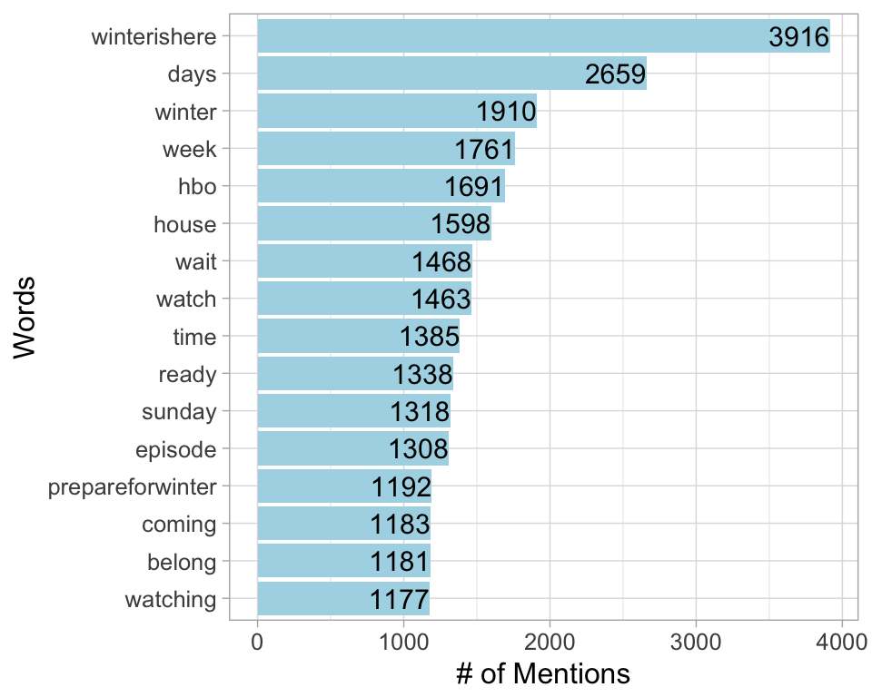
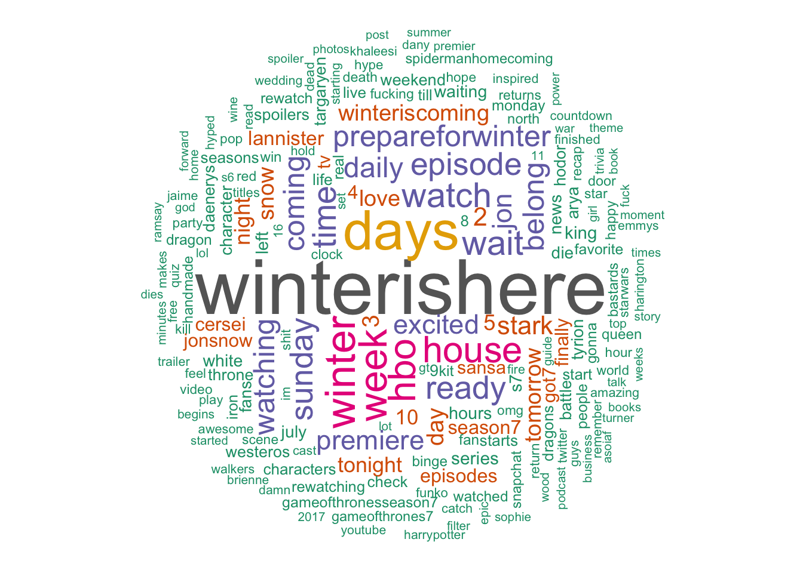
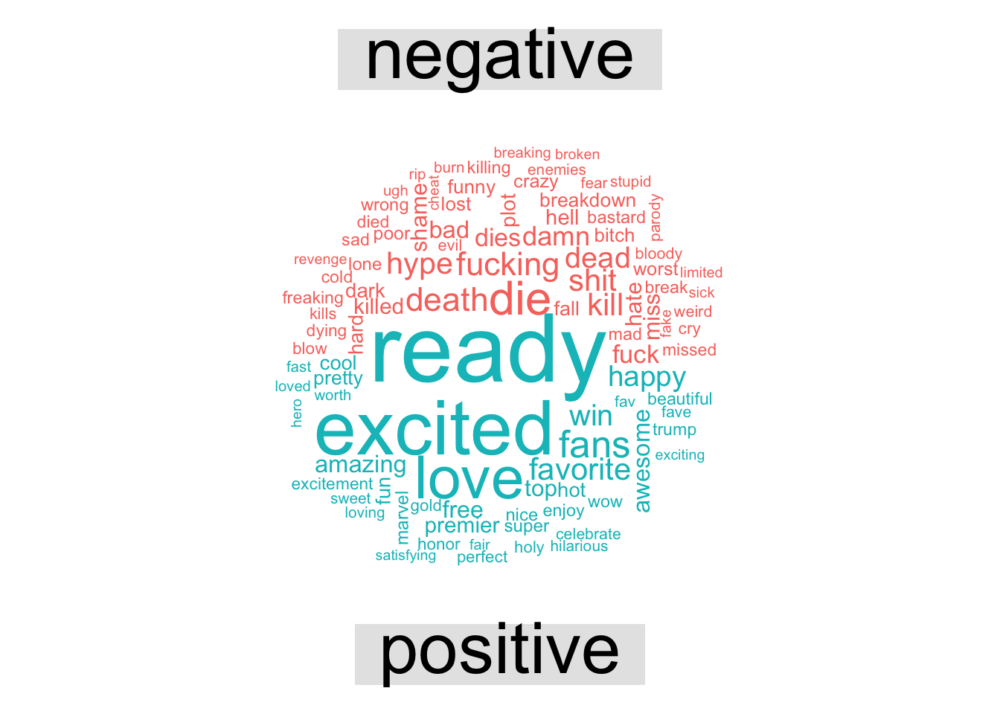
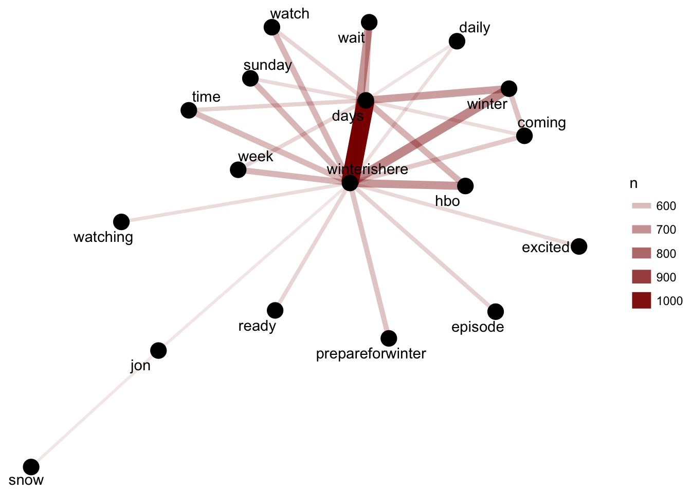

A text analysis of 100,000 tweets observed under the #GameOfThrones hashtag from July 5th through July 16th, 2017
The Game of Thrones official Twitter page and die-hard fans promoted season 7 in the days leading up to the the July 16th Premiere.
The season was promoted on twitter…
“Fight every battle everywhere.”
— Game Of Thrones (@GameOfThrones) July 13, 2017
On 7.16, #WinterIsHere. pic.twitter.com/wSvp3hHvZZ
… the streets of London…
Look out, London, Winter is here! The Night King and his otherworldly friends the White Walkers are in the big city. #GoTS7 #WinterIsHere pic.twitter.com/JMRjgiv8id
— Sky Atlantic (@skyatlantic) July 11, 2017
…and snapchat…
.@Maisie_Williams transformed into a Whitewalker at the #GoTPremiereLA using the #GoT @snapchat lens. #WinterIsHere pic.twitter.com/GcMrGagN7k
— Game Of Thrones (@GameOfThrones) July 13, 2017
…just to name a few places.
Fanatics and latecomers binge-watched their way through the first six seasons of Game of Thrones to get caught up for the Season 7 premiere on Sunday, June 16th.
Managed to watch 5 seasons of Game of Thrones in 3 days only got 1 season to go 😊😄💯 @GameOfThrones @Thrones_Memes pic.twitter.com/LbS1uC1ZwT
— Kelsey Heath (@k3135y) July 14, 2017
100K #GameOfThrones Tweets
We kept busy by downloading about 100,000 tweets housed under the #GameOfThrones hashtag.
This is what the twitterverse was saying in anticipation of the season 7 premiere…
The Most Frequently Mentioned Words among these tweets were:

In a wordcloud:

Sentiment Analysis
Disclaimer: We will analyze the words in these tweets to get an idea of the sentiments that are inherent to the language that is used when speaking about #GameOfTHrones, but it’s important to keep in mind that * individual words do not neccesarily represent the sentiment of an overall statement *.
Words paired with sentiments from the NRC Emotion Lexicon.
The most common sentiments represented in the tweeted words were:

Most common words, by sentiment

Positive-Negative Sentiments
More simply, we can evaluate words as inherently positive or negative using the Bing Lexicon for it’s positive-negative word classifications.
Total Number of Positive / Negative Words

Most frequently mentioned Positive / Negative Words

Positive / Negative Wordcloud

Word Pairings
Individual words may lend us some understanding of the kinds of language being used, but looking at word pairings helps us to see how terms appear alongside one another frequenly and consisently.
Which words are frequently paired together?

The word web above displays fequency of word pairings. Words that appear together frequently, but may not necessarily be paired together consistently. The word web below joins words by the correlational value between them.
Which House Do You Belong To?
Nothing like season premiere hype to make a “Which house do you belong to?” quiz go viral. Below are the houses that these twitter-users belonged to. (These arent the official buzzfeed results.)

Which Game of Thrones house do you truly belong in? https://t.co/wpK6J2z8np
— BuzzFeed Community (@BuzzFeeders) July 13, 2017
Winter is Here
Lastly, let’s celebrate the fact that Winter is Here with a text portrait using these tweets.
A special shout out to Giora Simchoni of the Internet for putting together a neat function for simplifying text-portrait drawing in r.


References
H. Wickham. ggplot2: Elegant Graphics for Data Analysis. Springer-Verlag New York, 2009.
Jeff Gentry (2015). twitteR: R Based Twitter Client. R package version 1.1.9. *https://CRAN.R-project.org/package=twitteR*
Dataset available on data.world